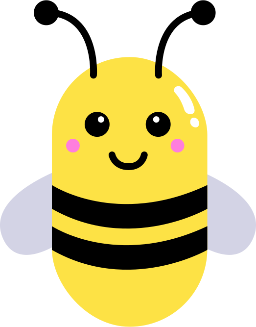

Salut à toi jeune explorateur ! Je suis Pauline, une petite abeille vivant dans le monde de Polliners, et j'ai besoin de comprendre quel est mon rôle dans la vie des fleurs.
Heureusement, la reine des abeilles m'a laissé quelques vidéos qui vont m'aider à faire mes devoirs. Tu m'aiderais beaucoup en m'accompagnant pour explorer le monde de la Pollinisation. Ca te dit qu'on regarde les vidéos ensemble ?